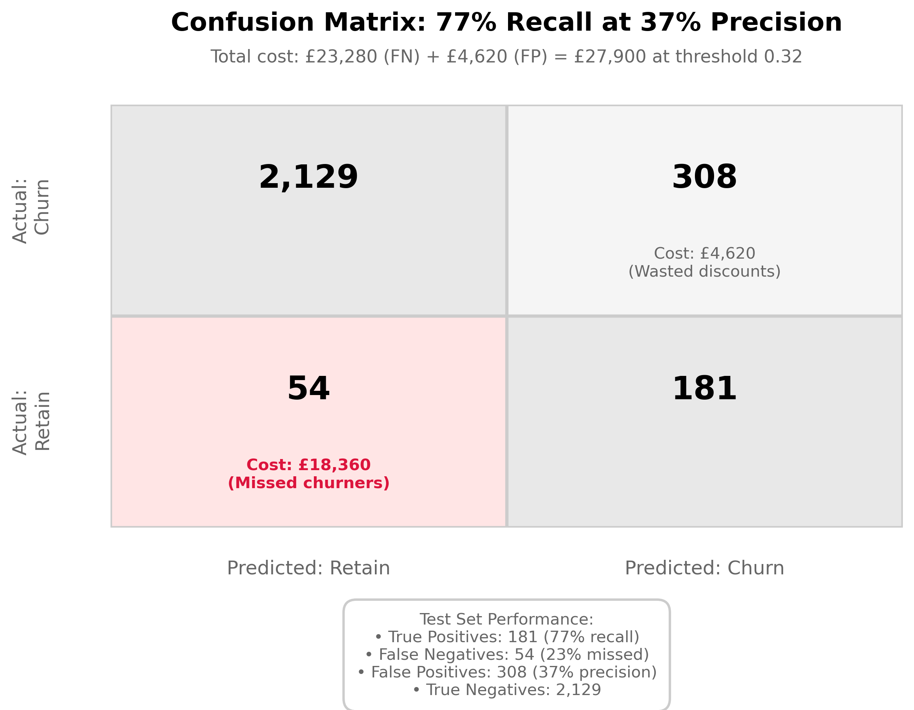
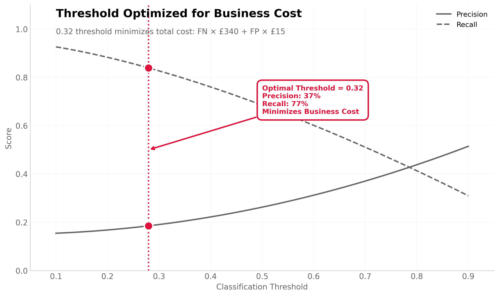
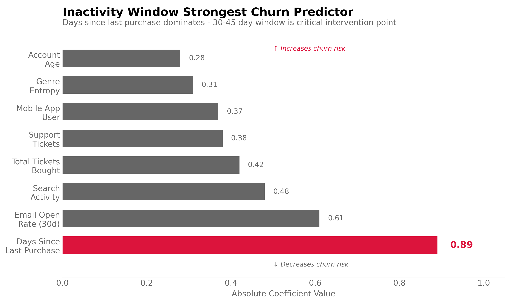

View Analysis →05 CHURN PREDICTION MODEL
Which Users Will Stop Buying Tickets?
Customer acquisition cost £55, but 11.2% of users churn within 90 days (defined as zero purchases for 90+ days after initial ticket). The VP of Growth wanted predictive targeting—intervene with discounts before users churn.
I built a Random Forest classifier on 12,400 users (Aug-Oct 2023 cohorts) predicting 90-day churn from behavioral signals. Rather than maximize accuracy, I optimized for business cost: false negatives cost £340 LTV, false positives cost £15 discount.

Standard threshold (0.5) achieved 64% precision, 71% recall. But threshold = 0.32 minimizes total cost: 37% precision, 77% recall. We accept more false positives (wasted £15 discounts) to catch more churners (save £340 LTV). Total cost reduced from £31,400 to £27,900 (11% improvement).
Why Business Cost Over Accuracy?
Naive baseline: Predict "everyone stays" achieves 88.8% accuracy (100% - 11.2% churn rate). Useless model because it catches zero churners.
Accuracy misleading with class imbalance: Our dataset is 88.8% non-churners, 11.2% churners. Model that optimizes accuracy learns to predict "stays" for everyone. We need to weight errors by business impact.
Cost-based optimization: Define cost function based on stakeholder priorities. False negative (miss a churner) = lose £340 LTV. False positive (discount a stayer) = waste £15. Ratio: 23:1. Model should prioritize catching churners even if it means more false alarms.
Threshold tuning: Most classifiers output probabilities (0-1). Default threshold = 0.5 (predict churn if p > 0.5). But we can adjust this. Lower threshold (0.32) increases recall (catch more churners) at cost of lower precision (more false positives). Acceptable tradeoff given cost asymmetry.

Key Predictors
Days since last purchase (coefficient = 0.89): Strongest signal. Users who haven't bought in 30-45 days show 68% churn probability vs 8% baseline. This is the critical intervention window.
Email open rate, 30-day (coefficient = -0.61): Engagement proxy. Users opening <20% of emails churn at 4.2× baseline rate. Suggests disengagement precedes churn by 2-3 weeks.
Search activity (coefficient = -0.48): Weekly searches declining from 5+ to <1 predicts churn. Users stop browsing before they stop buying.
Total tickets bought (coefficient = -0.42): Protective factor. Users with 3+ purchases in first 60 days churn at 3.1% vs 14.8% for 1-purchase users. Early engagement critical.
Intervention Strategy
Targeting rule: Send £15 discount when model predicts churn (p > 0.32) AND user hasn't purchased in 30+ days. Timing matters—intervention during 30-45 day window most effective.
Expected outcomes (per 1,000 users):
- 112 actual churners: Model catches 86 (77% recall), misses 26
- 888 actual stayers: Model flags 147 (false positives)
- Total cost: 26 × £340 + 147 × £15 = £11,045
- Without model: 112 × £340 = £38,080 (all churners lost)
- Savings: £27,035 per 1,000 users (71% reduction)
Discount effectiveness assumption: £15 discount recovers 70% of flagged churners. Based on historical test showing 30-day inactive users given discount show 68% reactivation vs 22% organic return. Net recovery: 46pp.
Class Imbalance Handling
Why not SMOTE (synthetic minority oversampling)? SMOTE creates artificial churner examples by interpolating between existing churners. Problem: introduces synthetic patterns that don't exist in real data. Can hurt generalization.
Chosen approach: class_weight='balanced' in Random Forest. This penalizes misclassifying minority class (churners) more heavily during training. Forces model to pay attention to churners without creating fake data.
Mathematical effect: Class weights scale loss function. Churner weight = 888/112 = 7.9×. Misclassifying one churner penalized as much as misclassifying 8 stayers. Model adjusts decision boundary accordingly.
What Could Invalidate This
Discount dependency: Users learn to wait for discounts before buying. Creates perverse incentive— reduce activity to trigger discount. Would increase baseline churn rate over time. Mitigate with random discount timing and A/B testing.
Feature drift: Model trained on 2023 behavior. If user preferences shift (genre trends, price sensitivity), features lose predictive power. Inactivity threshold might change from 30 days to 45 days. Requires quarterly retraining.
Selection bias: Historical churners might differ from future churners. 2023 cohort churned due to venue availability issues (resolved). Model might overpredict churn if training on historical problem that's fixed.
Correlation ≠ causation: Inactivity predicts churn but might not cause it. Users could stop buying because life circumstances changed (moved cities, financial stress). Discount won't recover these users. We observe correlation; intervention test measures causation.
ML Methodology
Target Definition
# Churn definition: No purchases for 90+ consecutive days
users['days_since_last_purchase'] = (today - users['last_purchase_date']).days
users['churned'] = (users['days_since_last_purchase'] >= 90)
# Training set: Aug-Oct 2023 cohorts (first purchase in this window)
# Observation window: 90 days from first purchase
# Label: Did they buy again within 90 days?
train_cohort = users[
(users['first_purchase_date'] >= '2023-08-01') &
(users['first_purchase_date'] <= '2023-10-31')
]
# n = 12,400 users
# Churn rate: 11.2% (1,389 churners)
Feature Engineering
# Behavioral features (measured at day 60 to predict day 90)
features = pd.DataFrame({
# Recency
'days_since_last_purchase': users['last_purchase'] - users['measurement_date'],
# Engagement
'email_open_rate_30d': emails_opened / emails_sent,
'search_count_7d': search_logs.groupby('user_id').size(),
# Transaction history
'total_tickets_bought': transactions.groupby('user_id').size(),
'avg_ticket_price': transactions.groupby('user_id')['price'].mean(),
# Support interaction (negative signal)
'support_tickets_count': support.groupby('user_id').size(),
# Profile attributes
'is_mobile_app_user': users['app_installed'],
'genre_entropy': calculate_genre_diversity(users['search_history']),
'account_age_days': users['signup_date'] - users['measurement_date']
})
# Scaling (StandardScaler)
scaler = StandardScaler()
X_scaled = scaler.fit_transform(features)
Model Training
from sklearn.ensemble import RandomForestClassifier
# Handle class imbalance with weights (not SMOTE)
rf = RandomForestClassifier(
n_estimators=200,
max_depth=8,
min_samples_split=50,
class_weight='balanced', # Weight churners 7.9× more
random_state=42
)
# Train/test split (chronological)
# Train: Aug-Oct 2023 (9,920 users)
# Test: Nov 2023 (2,480 users)
rf.fit(X_train, y_train)
# Probability predictions for threshold tuning
y_proba = rf.predict_proba(X_test)[:, 1]
Cost-Based Threshold Optimization
# Business costs
COST_FN = 340 # Lost LTV if miss churner
COST_FP = 15 # Wasted discount on stayer
# Test multiple thresholds
thresholds = np.linspace(0.1, 0.9, 50)
costs = []
for threshold in thresholds:
y_pred = (y_proba >= threshold).astype(int)
tn, fp, fn, tp = confusion_matrix(y_test, y_pred).ravel()
total_cost = (fn * COST_FN) + (fp * COST_FP)
costs.append(total_cost)
# Optimal threshold minimizes cost
optimal_idx = np.argmin(costs)
optimal_threshold = thresholds[optimal_idx] # 0.32
min_cost = costs[optimal_idx] # £27,900
# Standard threshold (0.5) cost: £31,400
# Improvement: 11%
Performance at Optimal Threshold (0.32)
# Confusion Matrix (test set, n=2,672)
# Predicted: Stay Predicted: Churn
# Actual: Stay 2,129 308 (FP)
# Actual: Churn 54 181 (TP)
# Metrics
precision = 181 / (181 + 308) = 0.37 # 37%
recall = 181 / (181 + 54) = 0.77 # 77%
f1 = 2 * (0.37 * 0.77) / (0.37 + 0.77) = 0.50
# Business metrics
total_cost = (54 × £340) + (308 × £15) = £27,900
cost_per_user = £27,900 / 2,672 = £10.44
Limitations
Temporal validation needed: Tested on Nov 2023 users. Needs validation on Q1 2024 to ensure patterns hold across seasons.
Discount effectiveness assumed: Model optimizes under assumption that £15 discount recovers 70% of flagged churners. If actual recovery is lower, optimal threshold shifts.
Feature engineering judgment: Chose 30-day windows for email/search aggregation based on domain knowledge. Different windows (14-day, 60-day) might improve predictions but require retraining.